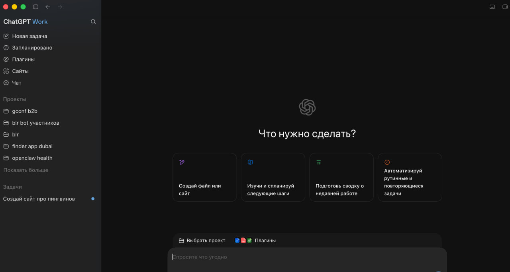
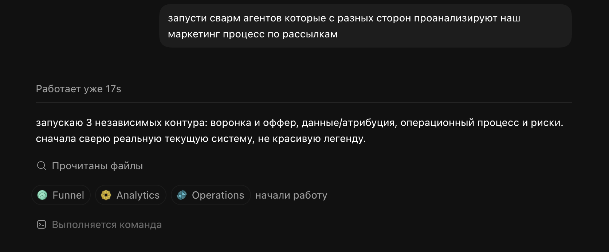
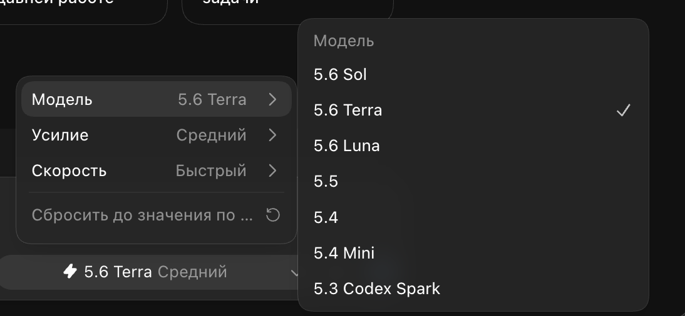

→chatgpt work — рабочая операционка: файлы, документы, деки, таблицы, сайты и браузер.
это было очень ожидаемо. сейчас меняется сам подход к работе, к управлению задачами, контекстом и делами.

chatgpt work: codex, работа с проектами, задачами, скиллами и сайтами в одном интерфейсе
02
/ 07
swarm агенты
swarm-агенты — история не новая, но сейчас она всё больше выходит на передний план: тренд смещается к тому, чтобы агенты работали в постоянном цикле улучшения, а не выдавали один ответ.
например, вы запускаете глубокое исследование по теме здоровья:
01
ресерчер — собирает исследования по заданным признакам.
02
верификатор — забирает результаты первого агента и проверяет корректность исследований.
03
статистик — смотрит на статистическую значимость.
04
критик — ищет слабые места, ограничения и дыры в выводах.

пример работы swarm-агентов
03
/ 07
gpt‑5.6: мозг, рабочая лошадь, конвейер
openai выпустила не одну «следующую модель», а одну семью под три разных типа работы:
→sol — максимум качества и reasoning для сложных исследований и тяжёлых агентных задач;
→terra — баланс интеллекта, скорости и цены для большинства рабочих процессов;
→luna — быстрый режим для массовых повторяемых действий: классификации, разметки и первичных сводок.

выбор модели gpt‑5.6: sol, terra или luna
04
/ 07
проблема теперь не в людях, а в дизайне работы
microsoft work trend index 2026 фиксирует организационный сдвиг: ограничение больше не в том, что люди способны делать, а в том, как вокруг них устроена работа.
→20 000 сотрудников, использующих ии, в 10 странах + триллионы анонимизированных сигналов продуктивности microsoft 365;
→58% пользователей ии говорят, что делают работу, которую не могли делать год назад; среди frontier professionals — 80%;
→две главные человеческие компетенции: контроль качества вывода ии и критическое мышление.
человек не исчезает. его роль смещается в постановку цели, контроль качества, критическое мышление и проектирование workflow.
05
/ 07
агентам нужна инфраструктура, не ещё один промпт
модель — только ядро. чтобы агент действительно работал, ему нужна инфраструктура:
→контекст и память — что агент знает о компании, задаче и прошлых решениях;
→коннекторы и инструменты — где он читает данные и что может делать в crm, документах, почте или браузере;
→доступы и правила — к чему он допущен, где обязан спросить разрешение, что ему запрещено;
→среда и наблюдаемость — где он исполняет работу, как мы видим его действия, ошибки и качество результата.
мы в gconf практически полностью отказались от внешних сервисов, кроме платёжек, и переехали на свою инфраструктуру — сами завайбкодили её под процессы команды.
06
/ 07
scheduled tasks: ии держит время
агенту больше не нужно ждать, пока вы вспомните о задаче. scheduled tasks позволяют ему запуститься один раз, повторяться по расписанию, реагировать на событие или мониторить изменения.
→по времени — каждое утро проверить сайт и дашборд, собрать изменения и обновить отчёт;
→по триггеру — пришла новая заявка, письмо или сообщение: агент собирает контекст, обновляет трекер и готовит следующий шаг;
→по изменению — появился новый отзыв, конкурент обновил цену или в проекте возник блокер: агент замечает сигнал и приносит не шум, а вывод.
это не напоминалка. это перенос повторяющегося внимания из головы в рабочий контур.
07
/ 07
fable 5: frontier-модель с предохранителем
anthropic выпустила fable 5 как модель пятого поколения для самых сложных задач в коде и knowledge work: длинных, асинхронных, с большим числом шагов.
но важнее не только мощность. fable и mythos 5 построены на одной базе, но fable получила усиленные safeguards для общего доступа. после временной остановки anthropic обновила защитные классификаторы и вернула fable в глобальный доступ.
это новый сигнал рынка: frontier-модель теперь — не просто интеллект. это интеллект плюс слой правил, который решает, где и как его можно безопасно применять.
проверьте, где сейчас ваш потолок использования ии и агентов в жизни и работе.
отметьте каждый слой, который уже работает у вас. не теория — реальный контур жизни или работы.
00 / 09
умный бадди
вы с ним думаете над задачами, спрашиваете, просите объяснить и помочь найти.
0 / 9
вы ускоряете мышление. первый сдвиг — перестать оставлять результат в чате и собрать один используемый артефакт.
gconf / среда обучения
мета-навык сейчас — уметь выстраивать ии-нейтив процесс из разных агентов и создавать под них среду: память, контексты, процессы.
мета-навыки и паттерны помогают взять максимум от агентов и эффективно сделать их частью жизни и работы.
в gconf мы создаём среду, в которой проводим через серию экспериментов и практик: замечаем паттерны, собираем мета-навыки и интегрируем агентов в свою жизнь и работу.
01 / ежедневные квесты
маленькие шаги вместо кучи теории
каждый день вы делаете один маленький шаг. квесты построены так, чтобы за 10–15 минут продвигаться — не выпадать в бесконечное «потом разберусь».
02 / не про кнопочки
инструменты меняются, навык остаётся
фокус — на мета-навыках и паттернах, которые помогают понять, как сейчас думать обо всём, что случается с агентами, и как они влияют на нас. это продолжает работать, когда инструменты меняются.
«с нулевым опытом программирования сделала удобный html-файл. месяцы не могла допроситься айтишников»01«это мой первый в жизни сайт, и я чувствую себя капец взрослой»02«за пару часов на выходных сделал коллектор вакансий со смарт-фильтром, работает вполне годно»03«моё первое приложение, я в восторге. потратила час»04«я отписалась от flo premium и подписала мужа на своего бота по фазам цикла»05«собрала для мамы домашнего доктора. скорее мини-оркестр из ролей»06«я впервые что-то завайбкодила»07«загрузила всё в codex и получила глубокий психологический анамнез»08«он у меня сидит в телеграме. помнит контекст, если не лучше»09«сегодня собрала себе бот для подсчёта калорий по фото. курс ещё не начался»10«при правильных инструментах можно очень быстро создавать»11
«с нулевым опытом программирования сделала удобный html-файл. месяцы не могла допроситься айтишников»01«это мой первый в жизни сайт, и я чувствую себя капец взрослой»02«за пару часов на выходных сделал коллектор вакансий со смарт-фильтром, работает вполне годно»03«моё первое приложение, я в восторге. потратила час»04«я отписалась от flo premium и подписала мужа на своего бота по фазам цикла»05«собрала для мамы домашнего доктора. скорее мини-оркестр из ролей»06«я впервые что-то завайбкодила»07«загрузила всё в codex и получила глубокий психологический анамнез»08«он у меня сидит в телеграме. помнит контекст, если не лучше»09«сегодня собрала себе бот для подсчёта калорий по фото. курс ещё не начался»10«при правильных инструментах можно очень быстро создавать»11
gconf / поток 27 июля
вайбкодинг, агенты и агентские процессы.
следующий поток — 3 недели практики, чтобы встроить актуальный ии-стек в свою жизнь и работу.